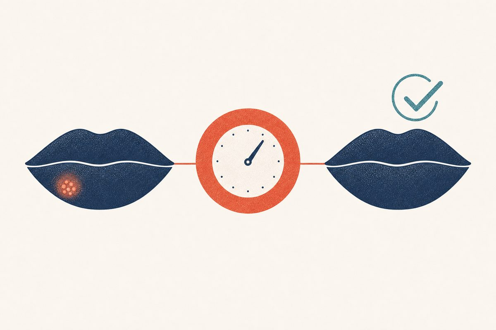

Key Takeaways
- Timing matters: antiviral medicines work best when taken at the warning signs, before blisters develop, and the valacyclovir label says to start at the earliest symptom, such as tingling.[15][4]
- Oral antivirals have the strongest evidence. In placebo-controlled trials, a one-day valacyclovir course shortened the episode by about a day, and a single famciclovir dose shortened healing by about 2 days.[1][2]
- Over-the-counter docosanol cream shortened healing by about 18 hours in its main trial, and reviews rate oral antivirals above topical treatment for episodic use.[5][7][13]
- Home care, such as ice or a warm washcloth, a pain reliever, and lip sunblock outdoors, eases symptoms but is comfort care, not a cure.[15][14]
- Do not touch or pick the sore, wash your hands if you do, and do not kiss anyone until it heals.[14]
- If you get cold sores often, a clinician can discuss an antiviral plan for the next episode or daily preventive treatment.[13][9]

The First 24 Hours: The Window That Matters
Timing is the part of cold sore treatment you control most. In recurrent cold sores the virus replicates for only a brief period, which is why short antiviral courses make sense.[2] Antiviral medicines work best when you take them at the warning signs, before any blisters develop.[15] Early oral treatment shortens the episode, but it usually does not stop the sore from forming: in an oral acyclovir trial, treatment did not affect whether lesions developed or how large they became.[16]
The most reliable early warning is the prodrome: a tingle, itch, or burn in a spot where you have had a sore before. The valacyclovir label says therapy should start at the earliest symptom of a cold sore, such as tingling, itching, or burning, and in the valacyclovir trials participants were told to start at the first symptoms.[4][1] In an older oral acyclovir trial, faster healing was seen among people who could start treatment in the prodrome or earliest redness stage.[16]
If a blister has already appeared, treatment can still help. In the penciclovir cream trial, healing was faster whether treatment started early or at the bump or blister stage, and one review advises starting ideally in the prodrome and no later than 48 hours after lesions appear.[6][13]
Oral Antivirals: The Fastest Option
Three oral antivirals are used for episodic cold sore treatment. Reviews rate them above topical antivirals, and their benefits in trials are real but modest.[13][12]
- Valacyclovir: The FDA-labeled cold sore regimen is a single day of treatment, 2 grams taken twice, 12 hours apart, started at the earliest symptom.[4] In the first of two placebo-controlled trials, this one-day course reduced the median episode length by 1.0 day, with similar results in the second, and it shortened time to healing and to pain relief.[1]
- Famciclovir: The FDA-labeled dose for recurrent cold sores is 1,500 mg as a single dose, started at the first sign or symptom.[17] In its trial, where patients started within 1 hour of symptoms, median healing time was 4.4 days versus 6.2 days with placebo, about 2 days faster.[2]
- Acyclovir: In a randomized trial, acyclovir 400 mg five times daily for 5 days reduced mean healing time by 27% and pain duration by 36% among people who could start in the prodrome or earliest redness stage. It requires more frequent dosing.[16]
| Drug | Fast regimen | Doses | Approx. savings |
|---|---|---|---|
| Valacyclovir | 2 g twice, 12 hours apart, for 1 day[4] | 2 in one day | ~1 day (median episode)[1] |
| Famciclovir | 1,500 mg once[17] | 1 | ~2 days (median healing 4.4 vs 6.2 days)[2] |
| Acyclovir | 400 mg five times daily for 5 days (trial regimen)[16] | 25 over 5 days | Mean healing time 27% shorter with an early start[16] |
Because the valacyclovir and famciclovir regimens take one day or a single dose, they are simple to start as soon as symptoms begin.[4][17] Cold sores are usually diagnosed by how they look, so a clinician can often assess them by video.[13] See our dedicated valacyclovir guide for dosing detail, safety, and comparisons.
Topical Antivirals: Honest Limits
If you have only an over-the-counter cream on hand, it can help a little, but it is worth being clear about what topicals can and cannot do. Docosanol 10% cream (Abreva) is applied five times a day, starting at the first tingle, until healed.[18] In its pivotal trial, median healing time was 4.1 days, 18 hours shorter than with placebo.[5] Prescription penciclovir 1% cream healed classic lesions 0.7 day faster than placebo (median 4.8 versus 5.5 days).[6]
Reviews describe topical treatments as mainly reducing lesion duration and local symptoms when applied early, and they generally do not change how often cold sores come back.[7][13] A combination cream of acyclovir 5% with hydrocortisone 1% adds an anti-inflammatory: in a randomized study, it reduced total lesion area by 25% compared with acyclovir cream alone.[11] A meta-analysis found that adding a topical corticosteroid to an antiviral lowered the rate of ulcerated lesions compared with the antiviral alone, but did not shorten healing time compared with the antiviral alone.[10]
There is a real consumer lesson here. Antiviral skin creams often shorten an outbreak by only a few hours to a day, and for episodic treatment, oral antivirals are rated above topical antiviral therapy.[15][13] A network meta-analysis of randomized trials found several antiviral agents effective for treating cold sores.[8] If a fast result is the goal, an oral antiviral started at the first tingle is the stronger route.
Home Care That Actually Helps
Home care will not cure a cold sore faster on its own, but it can ease pain and help keep the virus from spreading. Measures that health agencies and dermatologists advise include:
- Ice in a washcloth or a warm washcloth applied to the sore to help ease pain.[15]
- Gentle washing of the blisters with antiseptic soap and water.[15]
- Pain relief with an over-the-counter pain reliever such as acetaminophen (paracetamol) or ibuprofen if the sore is painful.[14][15]
- Sun protection on the lips, with a sunblock lip balm when you are outside, because sun exposure is a known trigger.[14][15]
- Rest and stress reduction, since stress can reactivate the virus and constant sleep deprivation triggers cold sores for some people.[19]
Wash your hands with soap and water whenever you touch the sore, and do not share utensils, straws, or glasses while you have one.[14][15]
What Slows Healing (and Worsens the Sore)
Just as important as what you do is what you stop doing. Common mistakes during a cold sore include:
- Touching, popping, or picking the blister or scab: leave it alone except to apply a cream, and wash your hands before and after if you do touch it. The blister fluid is contagious.[14][19]
- Rubbing creams in or eating foods that sting: dab cream on instead of rubbing it in, and skip acidic or salty food if it makes the sore feel worse.[14]
- Unprotected sun and sunbed exposure, a known trigger for cold sores.[14][15]
- Delaying treatment while waiting to see whether the tingle "becomes anything," when antivirals work best at the warning signs.[15]
- Kissing or oral sex before the sore has completely healed, which risks passing the virus on.[14]
If you want the shortest possible episode, the pattern that works is simple: treat early, protect the skin, and keep your hands off the sore.
| Do | Don't |
|---|---|
| Start a prescribed oral antiviral at the first tingle[4] | Wait to see whether the tingle "becomes anything" |
| Ease pain with ice in a washcloth or a warm washcloth[15] | Rub cream into the sore instead of dabbing it on[14] |
| Use sunblock lip balm outdoors[14] | Touch, pick, or pop blisters and scabs[14] |
| Wash hands after touching the sore[14] | Kiss or share utensils and glasses while you have a sore[14][15] |
A Step-by-Step Protocol
| Moment | Action | Why |
|---|---|---|
| First tingle | Take your prescribed oral antiviral, or contact a clinician the same day[4][15] | Antivirals work best at the warning signs |
| Blister appears | If not yet treated, treatment within 48 hours can still help; use ice or a warm washcloth for pain[13][15] | Later treatment still has value |
| Weeping stage | Wash gently with antiseptic soap and water; do not touch or pick[15][14] | Limit spread and irritation |
| Crusting stage | Use sunblock lip balm if outdoors[14][15] | Sun is a known trigger |
| Healing stage | See a clinician if it has not started to heal within 10 days[14] | Catch complications or another diagnosis |
This protocol does not require many products. The moment with the highest return is the first one, and everything after it is support while the body finishes the job.
When Home Care Isn't Enough
Most cold sores clear up on their own within about 10 days, but some situations call for a clinician.[14] Seek care if the sore has not started to heal within 10 days, if it is very large or painful, or if you have a weakened immune system.[14][15] If you have eczema and a painful rash spreads quickly, seek urgent help: the cold sore virus can cause eczema herpeticum, a potentially serious skin infection.[20] Sores near the eyes need a clinician, and eye pain, redness, light sensitivity, or blurred vision need medical help as soon as possible, because herpes eye infection can threaten vision.[15][21]
For people with frequent recurrences, a clinician can choose between treating each episode and suppressive therapy.[3] Daily suppressive therapy with an oral antiviral is worth considering for severe or frequent recurrences, such as six or more a year.[13] A Cochrane review found that long-term oral antivirals can prevent cold sores, but the benefit is small.[9] See our main cold sore guide for the full prevention and suppression discussion.
Frequently Asked Questions
Cold sores are usually diagnosed by how they look, so a clinician can often assess them by video and decide whether an oral antiviral such as valacyclovir, famciclovir, or acyclovir is right for you.[13] If you get cold sores often, ask for a plan you can start at the earliest symptom, which is when the valacyclovir label says therapy should begin.[4]
Ice in a washcloth or a warm washcloth can help ease pain.[15] It is a comfort measure, not an antiviral treatment.
Sun exposure is a known trigger for cold sores.[15] Evidence for sunscreen is mixed: in a Cochrane review, sunscreen prevented cold sores triggered by experimental ultraviolet light in two trials but did not prevent those triggered by sunlight in another.[9] Sunblock lip balm outdoors is still advised by the NHS and by dermatologists.[14][19]
References
- Spruance SL, Jones TM, Blatter MM, Vargas-Cortes M, Barber J, Hill J, et al. High-dose, short-duration, early valacyclovir therapy for episodic treatment of cold sores: results of two randomized, placebo-controlled, multicenter studies. Antimicrobial Agents and Chemotherapy. 2003;47(3):1072-1080. doi:10.1128/AAC.47.3.1072-1080.2003
- Spruance SL, Bodsworth N, Resnick H, Conant M, Oeuvray C, Gao J, et al. Single-dose, patient-initiated famciclovir: a randomized, double-blind, placebo-controlled trial for episodic treatment of herpes labialis. Journal of the American Academy of Dermatology. 2006;55(1):47-53. doi:10.1016/j.jaad.2006.02.031
- Cernik C, Gallina K, Brodell RT. The treatment of herpes simplex infections: an evidence-based review. Archives of Internal Medicine. 2008;168(11):1137-1144. doi:10.1001/archinte.168.11.1137
- GlaxoSmithKline. VALTREX (valacyclovir hydrochloride) prescribing information. Revised November 2025. Accessed November 7, 2026. Valtrex prescribing information (PDF)
- Sacks SL, Thisted RA, Jones TM, Barbarash RA, Mikolich DJ, Ruoff GE, et al. Clinical efficacy of topical docosanol 10% cream for herpes simplex labialis: a multicenter, randomized, placebo-controlled trial. Journal of the American Academy of Dermatology. 2001;45(2):222-230. doi:10.1067/mjd.2001.116215
- Spruance SL, Rea TL, Thoming C, Tucker R, Saltzman R, Boon R. Penciclovir cream for the treatment of herpes simplex labialis. A randomized, multicenter, double-blind, placebo-controlled trial. Topical Penciclovir Collaborative Study Group. JAMA. 1997;277(17):1374-1379. PMID 9134943
- Mancini A, Inchingolo AM, Marinelli G, Trilli I, Sardano R, Pezzolla C, et al. Topical and systemic therapeutic approaches in the treatment of oral herpes simplex virus infection: a systematic review. International Journal of Molecular Sciences. 2025;26(17):8490. doi:10.3390/ijms26178490
- Koe KH, Veettil SK, Maharajan MK, Syeed MS, Nair AB, Gopinath D. Comparative efficacy of antiviral agents for prevention and management of herpes labialis: a systematic review and network meta-analysis. Journal of Evidence-Based Dental Practice. 2023;23(1):101778. doi:10.1016/j.jebdp.2022.101778
- Chi CC, Wang SH, Delamere FM, Wojnarowska F, Peters MC, Kanjirath PP. Interventions for prevention of herpes simplex labialis (cold sores on the lips). Cochrane Database of Systematic Reviews. 2015;(8):CD010095. doi:10.1002/14651858.CD010095.pub2
- Arain N, Paravastu SC, Arain MA. Effectiveness of topical corticosteroids in addition to antiviral therapy in the management of recurrent herpes labialis: a systematic review and meta-analysis. BMC Infectious Diseases. 2015;15:82. doi:10.1186/s12879-015-0824-0
- Hull CM, Levin MJ, Tyring SK, Spruance SL. Novel composite efficacy measure to demonstrate the rationale and efficacy of combination antiviral-anti-inflammatory treatment for recurrent herpes simplex labialis. Antimicrobial Agents and Chemotherapy. 2014;58(3):1273-1278. (Review.) doi:10.1128/AAC.02150-13
- Opstelten W, Neven AK, Eekhof J. Treatment and prevention of herpes labialis. Canadian Family Physician. 2008;54(12):1683-1687. PMID 19074705
- Leung AKC, Barankin B. Herpes labialis: an update. Recent Patents on Inflammation & Allergy Drug Discovery. 2017;11(2):107-113. doi:10.2174/1872213X11666171003151717
- National Health Service (NHS). Cold sores. Page last reviewed February 19, 2024. Accessed November 7, 2026. nhs.uk cold sores
- MedlinePlus Medical Encyclopedia. Herpes - oral. U.S. National Library of Medicine. Review date July 3, 2025. Accessed November 7, 2026. medlineplus.gov oral herpes
- Spruance SL, Stewart JC, Rowe NH, McKeough MB, Wenerstrom G, Freeman DJ. Treatment of recurrent herpes simplex labialis with oral acyclovir. Journal of Infectious Diseases. 1990;161(2):185-190. doi:10.1093/infdis/161.2.185
- U.S. Food and Drug Administration. FAMVIR (famciclovir) tablets: prescribing information. Revised April 2013. Drugs@FDA. Accessed November 7, 2026. FDA Famvir label (PDF)
- U.S. Food and Drug Administration. Abreva (docosanol 10% cream): Drug Facts labeling. Drugs@FDA, label file dated 2026. Accessed November 7, 2026. FDA Abreva label (PDF)
- American Academy of Dermatology. Cold sore remedies dermatologists recommend. Last updated February 1, 2024. Accessed November 7, 2026. aad.org cold sore self-care
- British Association of Dermatologists. Eczema herpeticum (patient information leaflet). Updated June 2023. Accessed November 7, 2026. BAD eczema herpeticum leaflet
- nidirect (Northern Ireland government, adapted from NHS content). Herpes simplex eye infections. Last modified May 8, 2026. Accessed November 7, 2026. nidirect herpes simplex eye infections